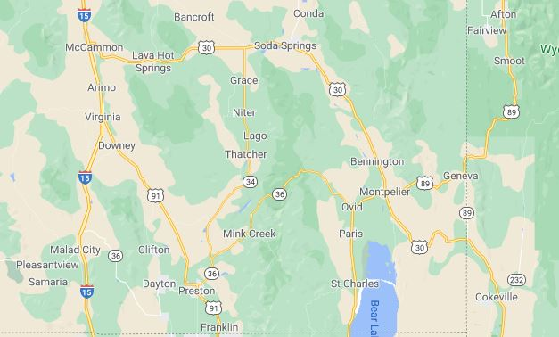

Local Towns

Winter storm dumps snow on Idaho ski resorts.
Author: KTVB Staff
BOISE, Idaho — A series of winter storms this week dumped a huge helping of powder on Idaho's ski resorts - and more is on the way. More than two feet of snow fell in some mountain locations over the last two days and all of the ski resorts in Central and Southwest Idaho are reporting prime skiing conditions. KTVB meteorologist Rick Lantz called it "a skiers' paradise." Read more...

Idaho Weather Forecast
1122 Downtown South
Preston, ID 001122
☎ 333.444.5555
✉ info@iwf.com


1122 Downtown South
Preston, ID 001122
☎ 333.444.5555
✉ info@iwf.com